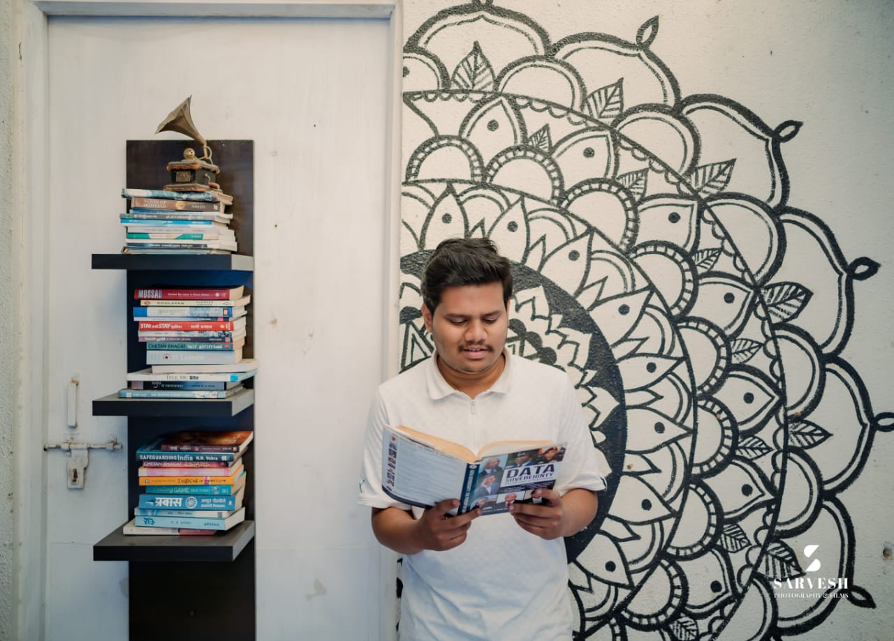
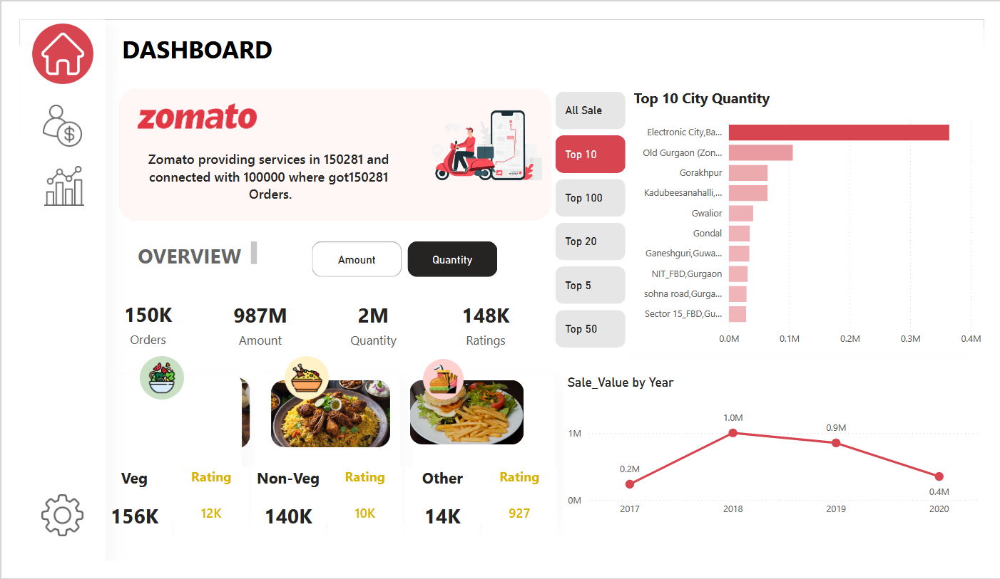
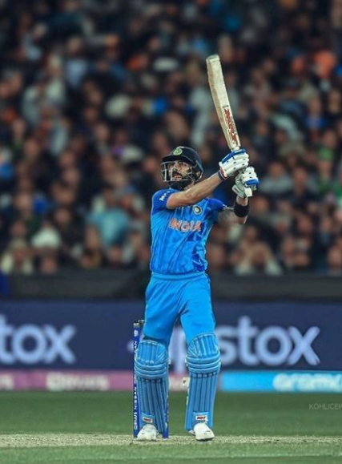

0 + Projects completed
About Me

Name: Ashish Halijol
Job Role:Data Analyst
Experience: 6 Months
Address: Pune, India
SQL - 95%
Python - 85%
Data Visualization - 90%
Machine Learning - 85%
Query Optimization - 95%
A passionate Data Analyst and Machine Learning enthusiast from Pune, India. I graduated as a Computer Science Engineer in 2023 and have been building expertise in analytics, visualization, and predictive modeling.
I specialize in turning complex datasets into actionable insights using tools like SQL, Python, Power BI, Tableau, and Metabase, and have hands-on experience in designing dashboards, automating reports, and implementing machine learning models.
Profile: Data Analyst & Machine Learning
Education: B.Tech, Computer Science Engineering (2023)
Location: Pune, India
Tools: SQL, Python, ML, NLP, Computer vision, Power BI, Tableau, Metabase
Other Skills: Java, Git, React, Dashboarding, Data Visualization
Languages: English, Hindi, Marathi, Kannada
Interests: Traveling, Data Storytelling, Learning AI, Chess
Resume
My professional and internship experience.
Data Analyst
TagID Solutions
Aug 2025 – Present
- Analytics on RFID-powered retail data for actionable insights.
- Automated dashboards & reporting (Python, SQL, Power BI, Tableau, Metabase, Grafana).
- Optimized SQL queries for high-performance analytics.
- Deployed predictive models for inventory management.
Data Analyst Intern
IAM, Pune
Apr 2025 – Aug 2025
- Built dashboards (Grafana, Metabase), automated Excel reports.
- Crafted complex PostgreSQL queries, Python automation.
- Collaborated with teams for data accuracy & insights.
ML Intern
LetsGrowMore · Hybrid
Dec 2021 – Jan 2022
- Developed ML models for regression/classification (Python, Pandas, Scikit-learn).
- Performed EDA, feature engineering, and visualizations.
- Presented results with clear metrics and insights.
My Projects

Zomato Restaurant Analysis
Power BI — analyzed 9,551 restaurants across 15+ countries. Built interactive reports using Power Query & DAX.
View DashboardCredit Card Complaints Dashboard
Tableau — interactive dashboard to analyze ~86k complaints, state heatmap, and response timeliness.
View DashboardLoan Eligibility Prediction
Python / Scikit-learn — logistic regression model, data cleaning, EDA, ROC-AUC & confusion matrix reporting.
View Project
Sales Forecast - Time Series Forecasting
Used multiple machine learning models to forecast sales (retail store) and performed time series analysis.
View Project
Customer Segmentation using Clustering Model
Developed a ML model to give various recommendations of financial products & services on target customer groups.
View Project

Virat Kohli Power BI Dashboard
Interactive Power BI dashboard on Virat Kohli: dynamic KPIs, opponent comparisons, and year-wise trends. Focused on creative visuals and actionable insights.
Tools: Power BI, DAX, data modeling.